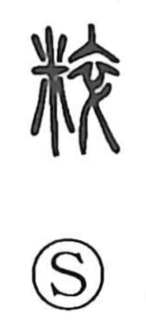

粋

Kun: iki | On: sui
pure ・ unmixed ・ genuine ・ refined ・ chic
Explanation
Originally written as 粹, this is a phono-semantic character: 米 “rice” supplies the sense, while 卒 serves as the phonetic, pointing to the reading sui—the same value heard in graphs like 悴 and 萃. The Shuowen glosses it as “not in disarray,” conjuring the image of rice that has been polished and kept free of admixture: unmingled, genuine grain. In deliberate contrast to 雑, the character for gathering and mixing many colors, 粋 came to mean the pure and the unadulterated. In Japanese it further developed the nuance of iki—chic, a crisp, polished stylishness set against boorishness.